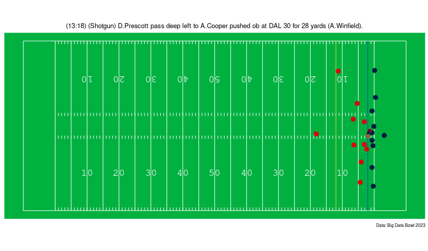
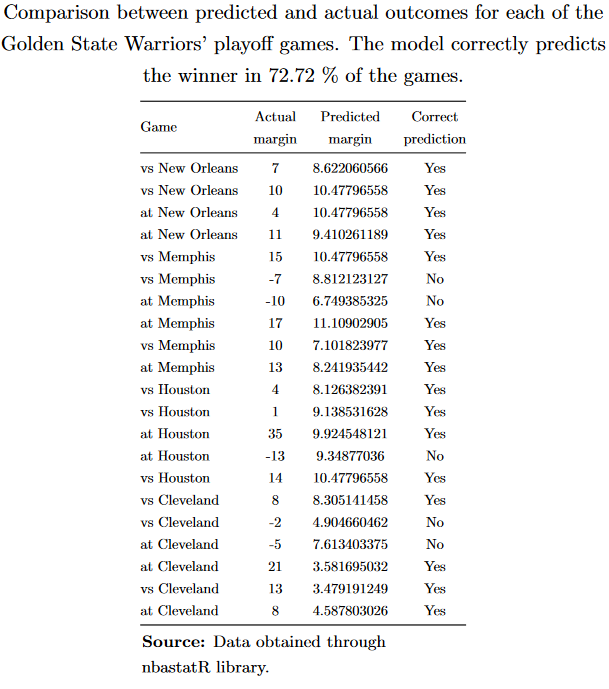
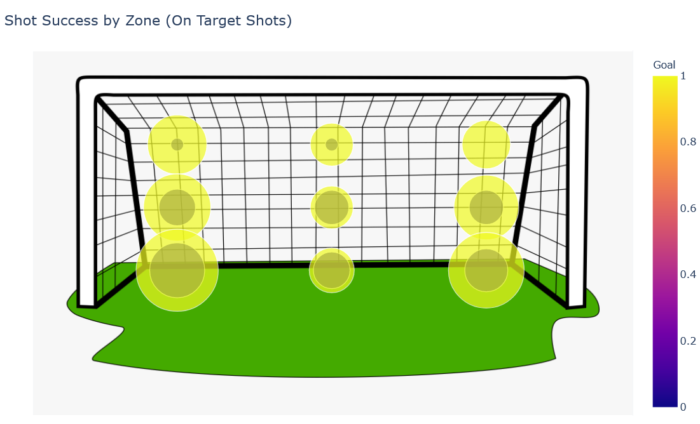

Projects 🧪
Here are some of the projects I have worked on:
🏈 A ggplot implementation for plotting NFL player tracking data.
Using ggplot and based on previous work by Adam Sonty, I created a set of functions to plot NFL tracking data.

🏒 Projecting Win Probability in Women’s Hockey
For our Big Data Cup entry, we adapted a soccer metric called Expected Threat (xT) to Hockey and used it to calculate Win Probability in Women’s Hockey. 

🏀 Application of Regularized Regression Methods to forecast the NBA Playoffs & Trade Evaluation Scenarios.
This is my undergrad thesis. Using regularized regression methods, we implement an improvement over the traditional plus-minus metric. We then explore the predictive value of our model by forecasting the outcome of the 2015 playoffs.

💻 Quarto Tutorial for beginners
As part of an introductory R course for health workers taught by Rodrigo Zepeda and me, I created a Quarto tutorial which covers report generation in Word and HTML.

⚽ Soccer Simulator
A tool for simulating soccer matches using Poisson distro + Monte Carlo Simulation. Still a WIP!

🦠 Estimating COVID-19 cases using contact index
I am currently working with Rodrigo Zepeda and Guillermo de Anda on implementing a series of models for estimating effective reproductive number of COVID-19 for Mexico City using Contact Index and different time series methods.
Because the models are still a work in progress, the repo is not yet publicly available :(
🍜 Random restaurant decider
R codes for running a random walk and randomly selecting which restaurant to dine at :)

🔐 Vigenere Cyphering App
Created and deployed an interactive web app for encrypting and deciphering messages using vigenere ciphering.

⚽ Are penalties really a coin toss?
A statistical analysis of penalty kicks taken in World Cups found that the most frequent zone (bottom left) is also the lowest in terms of goal percentage. For goalkeepers, the best strategy might be not to dive at all.  viz by: Jeffrey Braun
🦠 Vizualizing COVID 19 spread
Code for generating interactive maps that track the global spread of Coronavirus since March 2020.